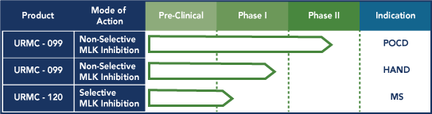

Research and Development
Camber NeuroTherapeutics supports both preclinical drug discovery efforts and clinical product development programs focused on neurodegenerative diseases. We have taken on the challenge of attacking neurodegenerative diseases with a fundamentally new approach. It is known that activation of the Mixed Lineage Kinase ( MLK ) class of enzymes can set off an inflammatory cascade involving the release of TNFα and IL-6, the generation of free radicals and other pro-inflammatory molecules in the CNS in response to injury, exposure to neurotoxins, or related cellular stresses; this pathologic process is referred to as neuroinflammation. Working in concert, the inflammatory cytokines and chemokines released in neuroinflammation can become autocatalytic, and overwhelm our intrinsic anti-inflammatory defense mechanisms. The pathology of neuroinflammation degrades the function of neurons and their synapto-dendritic networks, eventually leading to cognition impairment and memory problems.
Neuroinflammation occurs chronically in a number of different neurodegenerative diseases, the chart below is our estimate from a review of the medical literature of the approximate number of patients who suffer memory and cognitive impairments for the disease categories presented.
Read more about our science, our current progress, and our upcoming clinical trials, elsewhere on this website.
Neurodegenerative Disease
We’re born with > 100 billion nerve cells in our brains which do not replicate or reproduce themselves over the course of our life. These nerve cells form elaborate neural networks with other nerve cells providing us almost unlimited capacity to store memories, learn new skills, and consolidate input from our senses, etc. The touch points between nerve cells are formed by and interconnected through synapses, which serve as relay switches to transmit a neural impulse through a vast network of nerve cells. So while a single nerve cell has only 1 synapse, the multiplexing of its synaptic connection with other nerve cells allows it to communicate with thousands to tens of thousands more other nerve cells through the process of neural transmission.
Breakdowns in neural transmission can have multiple causes, dependent on the disease state, but ultimately the nerve cell loses its capacity to self-repair in the face ongoing progressive disease pathology. Impaired functioning of a nerve cell leads to gradual losses in synaptic function, which in turn leads to ever greater progressive losses of our neural networks. Multiple failures of several synapses in a network will soon lead to loss of that network, and the death of the associated neurons. Neuroplasticity is the concept of the brain adapting or modifying its structure to requirements from the internal and external environments. This process allows us to recover from injury or compensate for neurological disorders. However, the unremitting process of neuroinflammation defeats the possible gains or improvements in cognitive function that neuroplasticity can deliver. Therefore, turning off neuroinflammation is the necessary first step to the challenge of recovering cognitive functions and memories through the compensatory process of neuroplasticity.
Therapeutic Approaches
Camber Neurotherapeutic’s drug prototypes target the inhibition of the Mixed Lineage Kinases ( MLK ), which are a family of enzymes whose activation is known to be a precipitating event for setting in-motion the neuroinflammatory process. MLK3 is a major member of this enzyme class and our lead drug URMC-099 demonstrates very potent activity at inhibiting this enzyme. Extensive testing of our lead drug candidate, URMC-099, in both in vitro and in vivo test systems which model Multiple Sclerosis (MS), HIV-associated Neurocognitive Disorders(HAND), and Parkinson’s Disease (PD), and Postoperative Cognitive Dysfunctions (POCD), holds promise that this drug will exhibit similar neuro-anti-inflammatory activity in man.
Strucutre of URMC-099
Disease Targets
The cognition and memory disorders associated with Multiple Sclerosis (MS), Traumatic Brain Injury (TBI), HIV-associated Neurocognitive Disorders(HAND), and Parkinson’s Disease (PD), and Postoperative Cognitive Dysfunctions (POCD) probably share a common pathophysiology involving neuroinflammation. While there are pharmacotherapies to treat many of the symptoms associated with these diseases, the progressive deterioration of memory and cognitive functions resulting from neurodegeneration remains untreated, ultimately compromising the ability of the patient to practice the routine activities of daily living and to live independently of caregivers or social services.
Signs and Symptoms of Cognitive Disorders possibly resulting from NeuroInflammation
- Deficits in maintaining complex attention
- Problems in efficiency of information processing
- Failing long term memory
- Unable to follow a conversation which is changing topics
- Unable to maintain employment
- Unable to run a household
- Loss of coping skills
- Shutdowns at periods of peak mental demands
- Mood disorders, depression, and other neuropsychological impairments
Camber NeuroTherapeutics has chosen HAND and POCD has the initial clinical development programs where the efficacy of URMC-099 to inhibit neuroinflammation will be tested in man. Additional information on these two neurological syndromes follow below:
HAND (HIV-Associated Neurocognitive Disorders)
There are approximately 1.2 mm patients currently in the U.S. who are HIV-positive, and about 50,000 newly diagnosed HIV-positive patients join this pool on a yearly basis. The advent of Anti-Retroviral Therapy ( ART ) 30 years ago insures that HIV-positive patients who are compliant with their drug therapy can live near-normal lives. But even with the significant advances made over this time in the selectivity and potency of ART drugs, the HIV virus is still able to elude eradication through its ability to assume a latent, non-infectious form and remain sequestered in certain barrier compartments of the human body, most notably the CNS. As long as this situation persists, the patients can never expect a “cure” from their ART treatments, and the neurotoxins released by the latent form of the HIV virus cause a chronic neuroinfammatory reaction in the brain.
The longer the period of time a person has been infected by the HIV virus, the higher the probability that this person will have some form of cognition or memory impairment resulting from this neuroinflammation. The year 2015 represents something of a watershed event since over 50% of the HIV-infected population of patients in the U.S. will be > 50 years of age. Current market research indicates 50% of HIV-infected patients suffer from HAND, although most do no self-report their symptoms.
POCD (Postoperative Cognitive Dysfunction)
This well-known syndrome is characterized by memory or thinking impairment occurring after surgical operations that have involved general anesthesia. POCD has been quantified through several meta analyses using neuropsychological testing over the years, but its cause still remains an enigma. POCD is a general phenomenon affecting surgical patients of all ages, but in the patients > 65 years of age, POCD can lead to permanent problems with attention, executive level functions, and memory. For patients > 65 years of age undergoing Coronary Artery Bypass Graft ( CABG ) surgery, particular if such patient has a secondary co-morbidity such as diabetes or COPD, the odds are that 1 in 2 patients emerging from CABG surgery are likely to have some step-down in their cognitive abilities from which they will not recover.
The number of elderly patients in the U.S. undergoing CABG surgery on an annual basis places a significant number of people at risk for experiencing POCD.
Product Pipeline

Collaborations
Dr. Harris ('Handy') Gelbard
Dr. Gelbard is the Director of the Center for Neural Development and Disease and Professor of Neurology, Pediatrics and Microbiology & Immunology at the University of Rochester Medical Center. Dr. Gelbard’s lab provides support to Camber NeuroTherapeutics in identifying our lead product development candidates through his state-of-the-art drug screening technologies which model various aspects of neuroinflammation.
Dr. Steven Dewhurst
Dr. Dewhurst is Vice Dean for Research and Dean's Professor and Chair of Microbiology & Immunology at the University of Rochester School of Medicine and Dentistry (URSMD). His laboratory specializes in neurotoxicity models of HIV infection, neuroinflammatory mediators, and methods or therapeutic modalities for the treatment of HAND.
Mr. Scott Catlin, Esq.
Mr. Catlin is the Associate Vice President in the UR Ventures Office. This office provides access, direction and staff assistance to Camber NeuroTherapeutics as we scale-up our operations in the Rochester area.
Dr. Howard Gendelman
Dr. Howard E. Gendelman is the Margaret R. Larson Professor of Internal Medicine and Infectious Diseases, Chairman of the Department of Pharmacology and Experimental Neuroscience, and Director of the Center for Neurodegenerative Disorders at the University of Nebraska Medical Center. Dr. Gendelman is performing experiments with URMC-099 in a humanized mice model of HIV to assess the potential of this molecule to synergize with other ART modalities when presented in a proprietary nano-formulated technology.